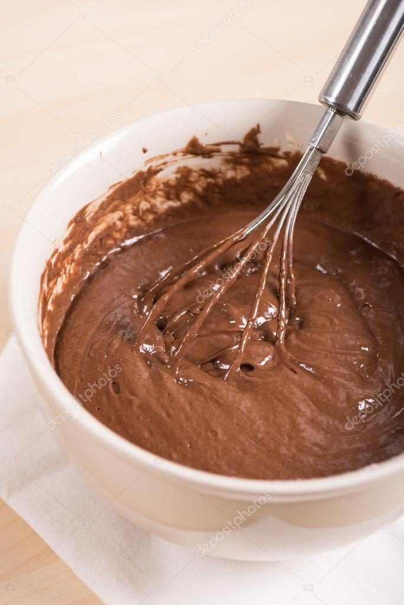
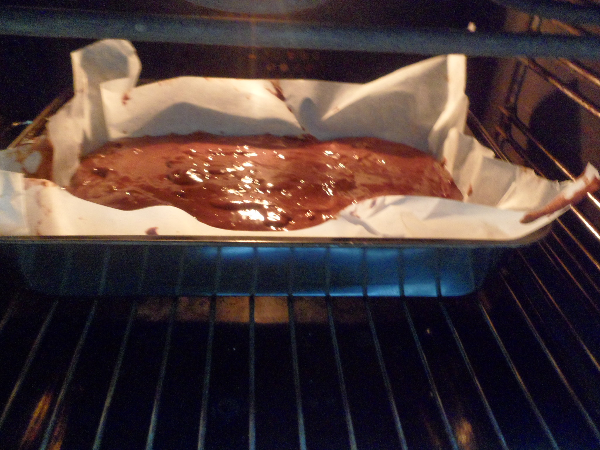
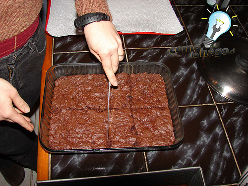

BROWNIES.
Procedimiento
1. Precalentar el horno a 350F o 180C.

2. Preparar un molde cuadrado de 20×20 cm. cubrirlo con papel aluminio el fondo.

3. En un bol de vidrio poner la mantequilla y la cocoa, derretir en el microonda a potencia alta, unos 45 segundos. Mezclar con un tenedor, agregar el azúcar y la vainilla, incorporar totalmente, agregar un huevo y revolver hasta que se incorpore totalmente, hacer lo mismo con el 2do huevo. Agregar la harina y los polvos de hornear, revolver hasta incorporar.


4. Verter en el molde ya preparado.
5. Hornear por 20-25 minutos o hasta que este todavía ligeramente húmedo y al tocarlo rebote suavemente.

6. Dejar enfriar totalmente antes de desmoldar y cortar en 16 cuadrados grandes o 20 rectángulos mas pequeños.
